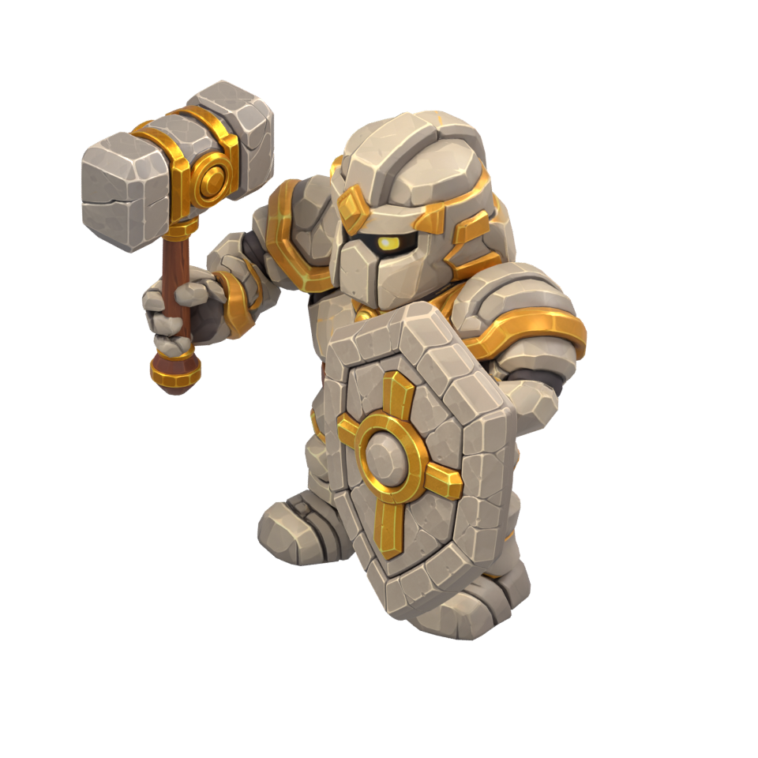
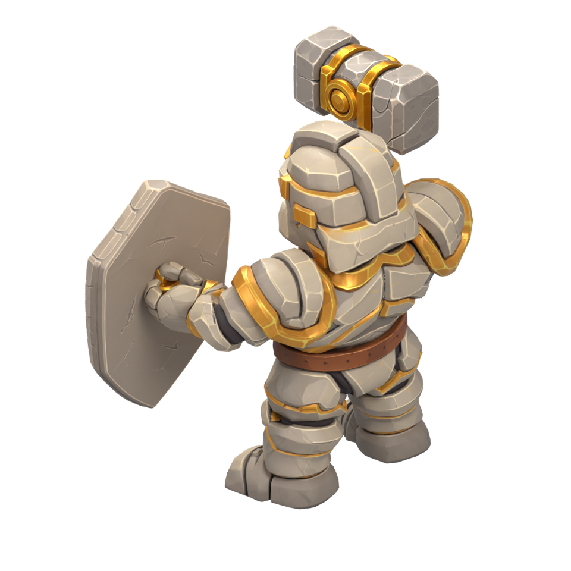
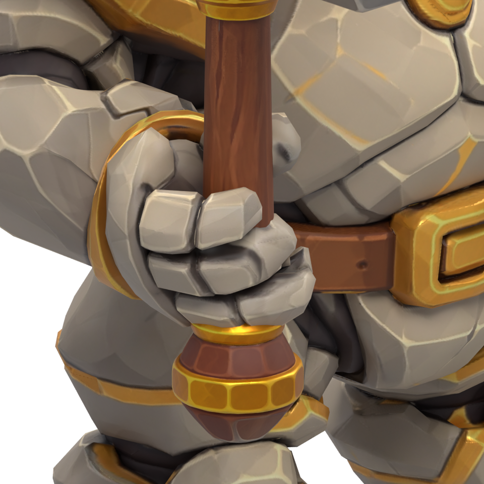
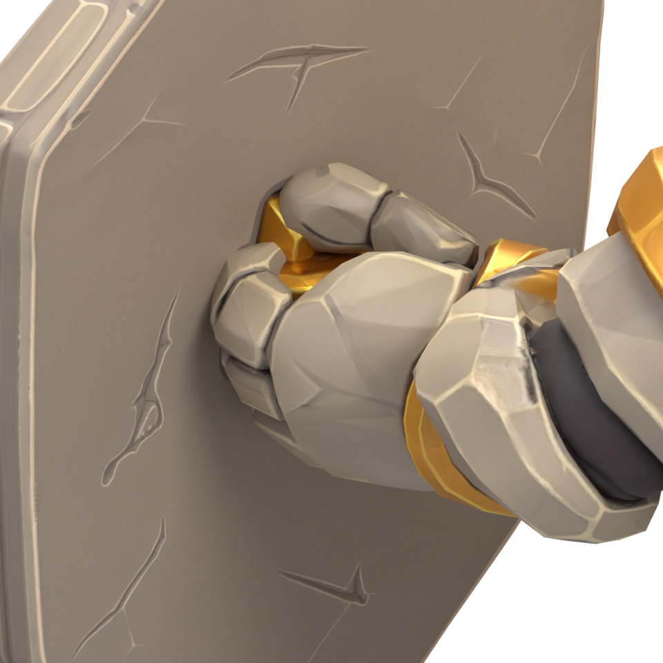
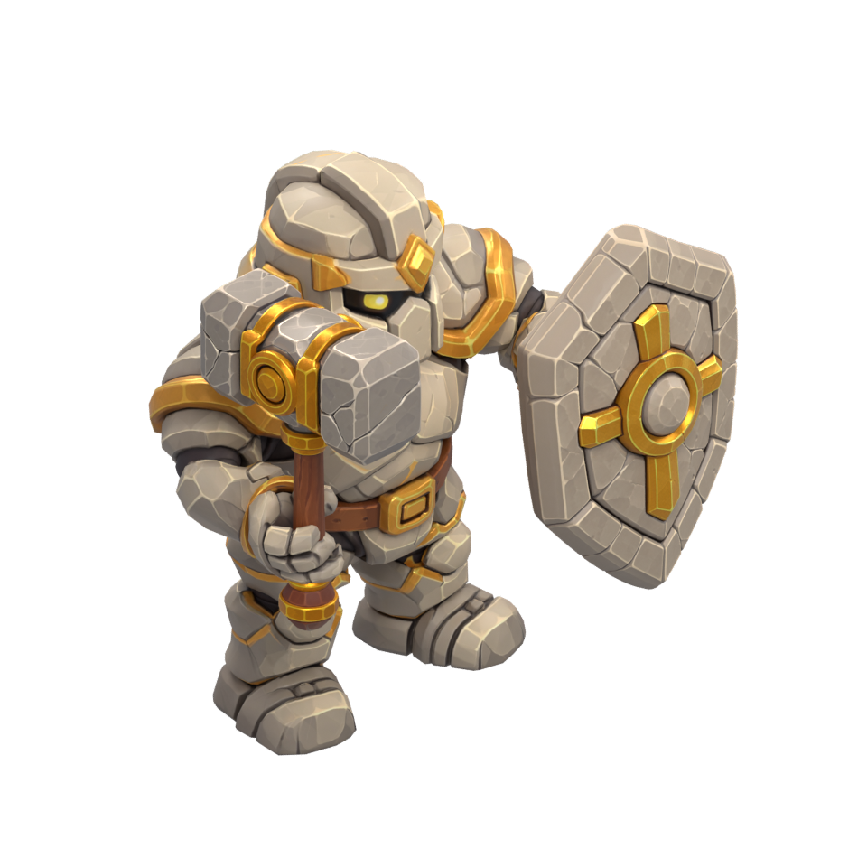
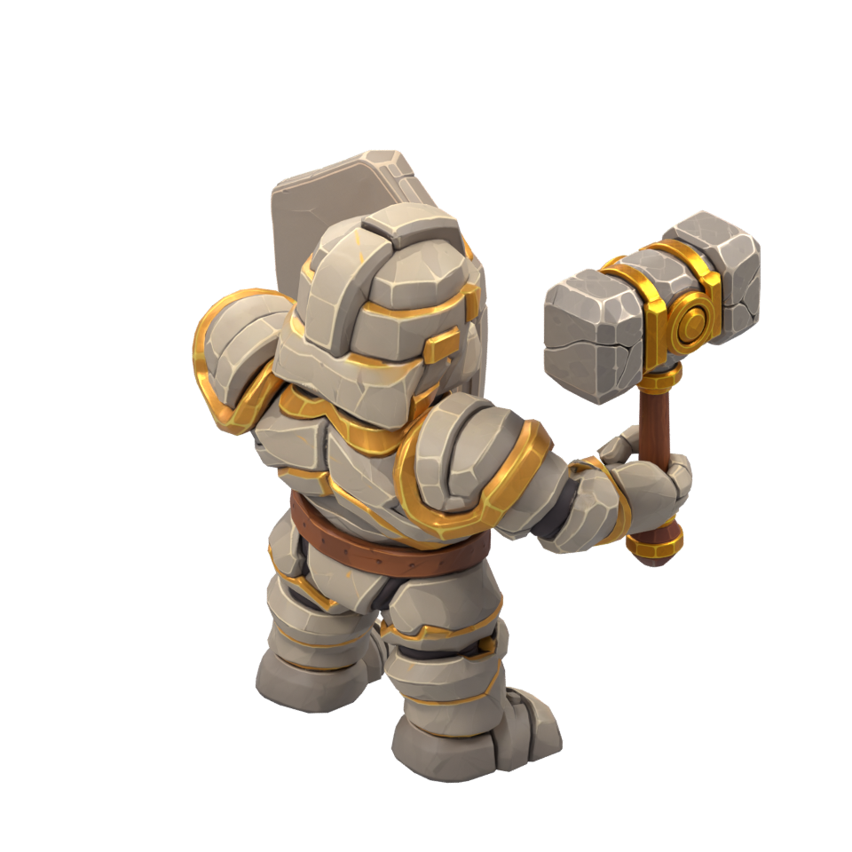

Lithide — prise des accessoires
Coudes fléchis, mains refermées sur le manche et sur l'attache dorée existante du bouclier. Rendus des GLB fournis ; peinture et proportions conservées. Proposition de pose fixe.
Scène Blender corrigée · Reproduction et limites · Contrôles géométriques

Avant — prise du marteau

Dos — prise du bouclier

Doigts et pouce autour du manche

Main sur l'attache native du bouclier

Autre vue avant

Autre vue arrière
Contrôles de cette pose uniquement. Les futures poses de marche et de combat devront être vérifiées à leur tour.